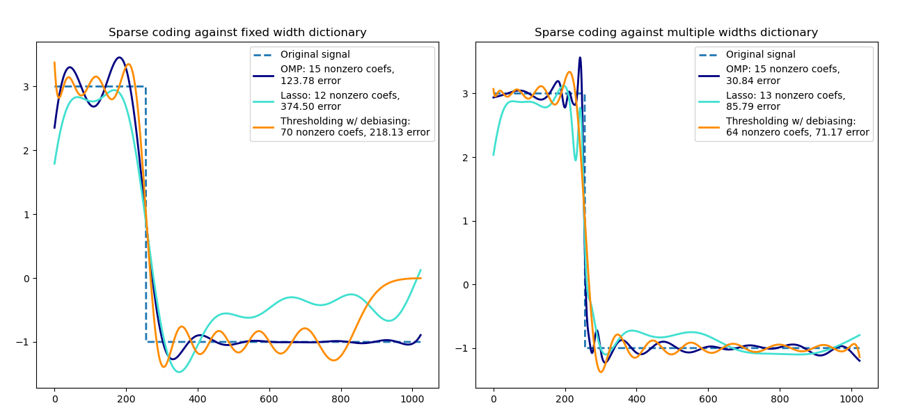

Note
Click here to download the full example code or to run this example in your browser via Binder
Sparse coding with a precomputed dictionary¶
Transform a signal as a sparse combination of Ricker wavelets. This example
visually compares different sparse coding methods using the
SparseCoder estimator. The Ricker (also known
as Mexican hat or the second derivative of a Gaussian) is not a particularly
good kernel to represent piecewise constant signals like this one. It can
therefore be seen how much adding different widths of atoms matters and it
therefore motivates learning the dictionary to best fit your type of signals.
The richer dictionary on the right is not larger in size, heavier subsampling is performed in order to stay on the same order of magnitude.
import numpy as np
import matplotlib.pyplot as plt
from sklearn.decomposition import SparseCoder
def ricker_function(resolution, center, width):
"""Discrete sub-sampled Ricker (Mexican hat) wavelet"""
x = np.linspace(0, resolution - 1, resolution)
x = (
(2 / (np.sqrt(3 * width) * np.pi**0.25))
* (1 - (x - center) ** 2 / width**2)
* np.exp(-((x - center) ** 2) / (2 * width**2))
)
return x
def ricker_matrix(width, resolution, n_components):
"""Dictionary of Ricker (Mexican hat) wavelets"""
centers = np.linspace(0, resolution - 1, n_components)
D = np.empty((n_components, resolution))
for i, center in enumerate(centers):
D[i] = ricker_function(resolution, center, width)
D /= np.sqrt(np.sum(D**2, axis=1))[:, np.newaxis]
return D
resolution = 1024
subsampling = 3 # subsampling factor
width = 100
n_components = resolution // subsampling
# Compute a wavelet dictionary
D_fixed = ricker_matrix(width=width, resolution=resolution, n_components=n_components)
D_multi = np.r_[
tuple(
ricker_matrix(width=w, resolution=resolution, n_components=n_components // 5)
for w in (10, 50, 100, 500, 1000)
)
]
# Generate a signal
y = np.linspace(0, resolution - 1, resolution)
first_quarter = y < resolution / 4
y[first_quarter] = 3.0
y[np.logical_not(first_quarter)] = -1.0
# List the different sparse coding methods in the following format:
# (title, transform_algorithm, transform_alpha,
# transform_n_nozero_coefs, color)
estimators = [
("OMP", "omp", None, 15, "navy"),
("Lasso", "lasso_lars", 2, None, "turquoise"),
]
lw = 2
plt.figure(figsize=(13, 6))
for subplot, (D, title) in enumerate(
zip((D_fixed, D_multi), ("fixed width", "multiple widths"))
):
plt.subplot(1, 2, subplot + 1)
plt.title("Sparse coding against %s dictionary" % title)
plt.plot(y, lw=lw, linestyle="--", label="Original signal")
# Do a wavelet approximation
for title, algo, alpha, n_nonzero, color in estimators:
coder = SparseCoder(
dictionary=D,
transform_n_nonzero_coefs=n_nonzero,
transform_alpha=alpha,
transform_algorithm=algo,
)
x = coder.transform(y.reshape(1, -1))
density = len(np.flatnonzero(x))
x = np.ravel(np.dot(x, D))
squared_error = np.sum((y - x) ** 2)
plt.plot(
x,
color=color,
lw=lw,
label="%s: %s nonzero coefs,\n%.2f error" % (title, density, squared_error),
)
# Soft thresholding debiasing
coder = SparseCoder(
dictionary=D, transform_algorithm="threshold", transform_alpha=20
)
x = coder.transform(y.reshape(1, -1))
_, idx = np.where(x != 0)
x[0, idx], _, _, _ = np.linalg.lstsq(D[idx, :].T, y, rcond=None)
x = np.ravel(np.dot(x, D))
squared_error = np.sum((y - x) ** 2)
plt.plot(
x,
color="darkorange",
lw=lw,
label="Thresholding w/ debiasing:\n%d nonzero coefs, %.2f error"
% (len(idx), squared_error),
)
plt.axis("tight")
plt.legend(shadow=False, loc="best")
plt.subplots_adjust(0.04, 0.07, 0.97, 0.90, 0.09, 0.2)
plt.show()
Total running time of the script: ( 0 minutes 0.271 seconds)